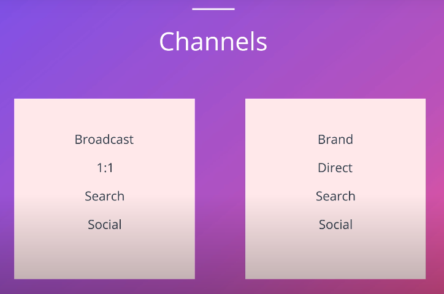
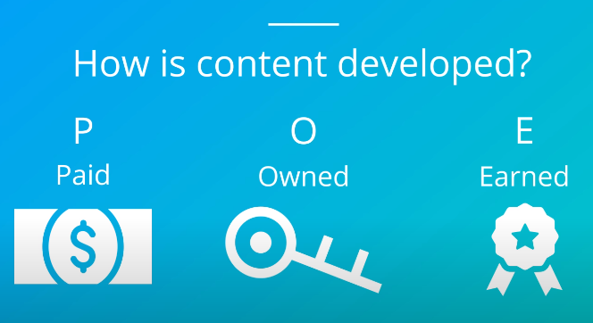
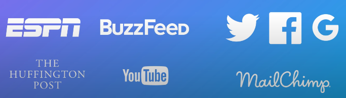

Digital Marketing Map: Where?

-----------------------------------------------------------------------------
Paid,Owned, and Earned

Paid-->Media you pay to place on a website that you don't control
Owned-->Media you author and typically runs on your own website
Earned-->Media that others write about you without you paying for it
-->The most effective type of marketing utilities all three types of content
-----------------------------------------------------------------------------
Revisit the Customer journey
Awareness-->This is where broadcast channels come into play a marketer can pay for a display ad on a website where the target customer hangs out,like youtube or espn
Interest-->This is where social channels often come into play, A marketer might post a blog on their website with detailed information about product or service and encourage visitors to share it in their social media channels or pay for post ad on twitter
Desire-->This is where social and search channels come into play, A marketer might ask an influential person on twitter to talk about your product, A marketer might also create a search ad campaign that shows up when customers search on the topic they're interested in
Action-->This is where search channels work very well, A marketer will run ads against very specific keywork searches that often include their brand name
Post Action-->This is where one-to-one channels come into play,A marketer might send customers a transaction confirmation email with additional information on the transaction or even an email with offers meant to bring the customer back
-->These are not hard and fast rules,Different channels can apply to one stage in the customer journey But this is a good way to think through how to choose which channels might make the most sense for reaching your customers as their attention for

---------------------------------------------------------------------------